Soft Pretzels | Baked | Vegan | Gluten-Free
These homemade vegan, gluten-free, yeast-free soft pretzels are simply amazing. There’s something so satisfying about that distinctive chewy exterior paired with the warm, soft interior of a pretzel that makes them irresistible. Such a fun snack to be made by all – bake up huge pretzels, regular-size, pretzel bites, or pretzel sticks with this dough. Perfect for afternoon snacks, movie nights, game days, or “just because.”
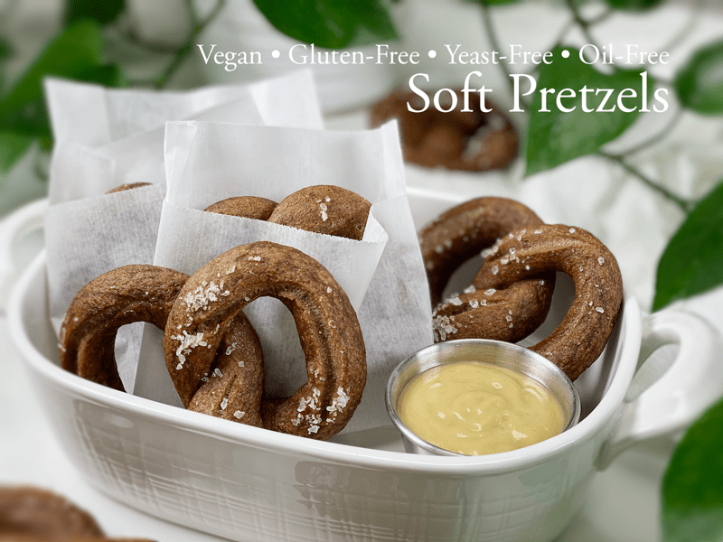
Both Bob and I have fond memories of soft pretzels. Today, we snuggled up on the couch and for the umpteenth time, we shared our pretzel stories. He remembers eating them on the streets of Pennsylvania when he was a young boy. A truck would drive by, much like an ice cream truck, selling fresh, hot soft pretzels. He would tear at the soft dough, dipping each bite in yellow mustard. I love it when he shares stories of his childhood with me.
My story took us back to when I was fourteen years old, working at the Pretzel Factory in our local mall. I worked roughly thirty hours a week, mostly in the evenings (when it was quiet) where I would do my homeschooling education in between serving customers and making pretzels and cookies. We served the pretzels with your choice of yellow mustard, cream cheese, or nacho cheese. To this day, I can still smell them baking. Mmm. I love it when I create recipes that can transport us back in time. Do you have a soft pretzel memory?
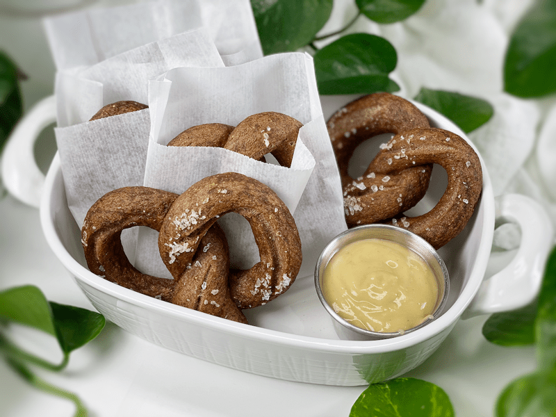
Anytime we take a step away from how traditional foods are made, we have to fight to retain the smells, textures, and tastes that we might have once been accustomed to. Gluten-free ingredients play differently, so creativity and ingenuity have to come into focus. With that being said, if you have been making old-school pretzels (with yeast, gluten flours, etc.) throughout your life, you will need to abandon some of your techniques and adapt to some new ones if you want to embark upon gluten-free vegan pretzels. Ready to learn something new? I hope that’s you nodding yes and not nodding off to sleep.
Key Steps in Making Gluten-Free Pretzels
Be PREPARED — Success
Before you start making the pretzels, make sure you sit down and read through this entire post. Have all stations prepared: ingredients and mixing station, boiling station, and baking station.
BOILING the Pretzels — Crust
Boiling pretzels effectively sets the crust before it goes in the oven. The water doesn’t actually penetrate very far into the bread, because the starch on the exterior quickly gels and forms a barrier. The pretzels here are boiled in a pot of water with baking soda. If you skip this process, the pretzels will look white and — petrified (sorry, but it’s true). So, please do NOT skip this step.
The only pretzel feature that I couldn’t replicate was the shiny crust which is achieved by using a solution of sodium hydroxide, commonly known as lye. It is dangerous (gloves and goggles are recommended) to handle food-grade lye. Baking soda is it!
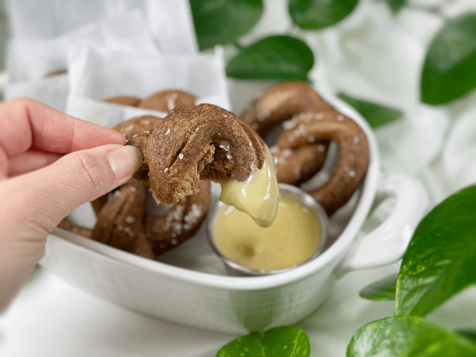
SHAPING the Pretzels — No Golden Rule
There’s no wrong way to shape a pretzel, but let’s stick with tradition today. I have some photos of the process, but if you want to see a video of how it’s done, check out YouTube. I found that while one pretzel was boiling, I could roll out and shape the next one, keeping a nice rhythm.
Using the RIGHT Salt — Makes a Difference
Not all salts are equal when it comes to topping pretzels. Pretzel salt is a coarse, large-grained salt of uniform size with no additives. The grains are rectangular-shaped and flat, which ensures that they adhere to pretzels and other baked goods like bagels, bread, or hard rolls. It is described as non-melting and trust me (through my own error) the wrong salt will indeed melt and disappear.
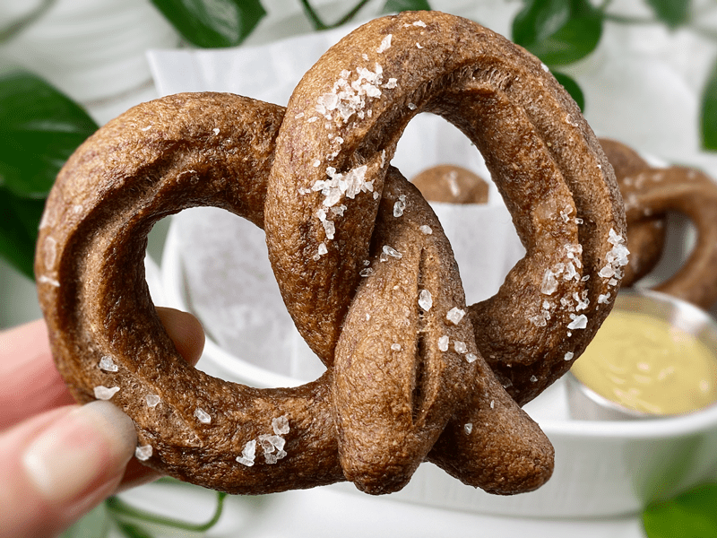
Using the Best SWEETENER
I tested this recipe with several sweeteners and by far the unsulfured blackstrap molasses was our favorite. Maple syrup works, but there is something about the molasses that made both Bob and me nod in agreement that this addition nailed the overall flavor of the pretzel. First off, blackstrap molasses is known for its iron content—one tablespoon contains about 20% of the daily value—but it is also a rich source of natural calcium, magnesium, and potassium. It is also a good source of manganese, vitamin B6, and selenium.
In addition to the health perks, the molasses also contributes (along with the act of boiling) to the wonderful coloring of the pretzels… giving them that deep golden-brown color. Flavor-wise, I chose it because it is reminiscent of malt, which is typically used in traditional soft pretzels. Malt is made from barley, and barley isn’t gluten-free. The blackstrap molasses has a complex flavor that reminds me of malt, caramel, and coffee.
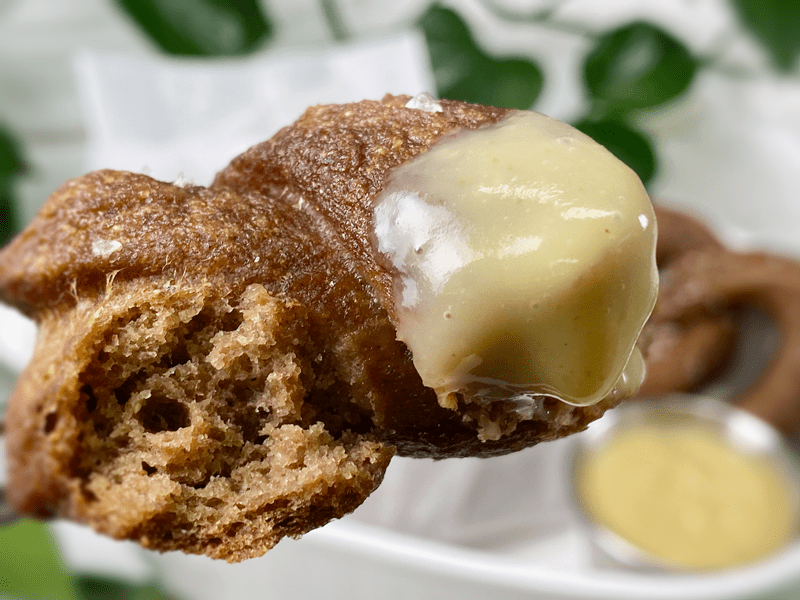
My favorite way of enjoying these pretzels is dipped in my vegan cheese sauce (sweet potato-based) or just plain ole yellow mustard. If you want to try a raw cheese sauce that is cashew-based, click (here). If cream cheese is your jam, I have several recipes to tickle your taste buds. The following recipes are all raw and vegan; Cream Cheese, Cultured Cream Cheese, and if you are adventurous, Rosemary and Cranberry Cream Cheese. Another option is mustard. Yellow mustard is typical so if you want to think outside of the box, how about testing out my Sweet and Spicy Mustard.
Please give this recipe and try and let me know what you think down below in the comments. blessings, amie sue
 Ingredients
Ingredients
Yields 11 (size depending)
Boiling Solution
- 8 cups water
- 2 Tbsp baking soda
- coarse sea salt for sprinkling
Preparation
Psyllium Gel
- Quickly whisk the water and psyllium husk POWDER in a mixing bowl. It will instantly start to gel, which is to be expected. Set aside while you prepare the remaining ingredients, so it can thicken.
- Preheat the oven to 350 degrees (F).
- Line a baking sheet with parchment paper, sprinkled with a little extra flour.
Dry Ingredients
- In the mixing bowl that we are going to knead the bread in, whisk together the rice flour, sorghum flour, buckwheat flour, arrowroot, baking soda, baking powder, and salt.
- Since we are using whole buckwheat kernels, you can grind in a blender or food processor.
- If you have a sifter, use that to thoroughly incorporate all the dry ingredients.
Mixing the Dough
- Add the psyllium gel and drizzle the molasses around the bowl.
- Using either a hand mixer or a free-standing mixer with a dough attachment, knead for 5 minutes (set a timer on your phone) to ensure that it gets kneaded enough (don’t we all love feeling needed?).
- Start the mixer on low until the flour is folded in, then turn it up one speed. If you start off at too high a speed, the flour will jump out of the bowl.
- You can do this by hand, but plan on kneading the dough for up to 10 minutes.
Shaping the Pretzels
- If you want to make equal-sized pretzels, use a scale to weigh out 80 grams dough balls.
- If at any point the dough gets sticky, have a little extra flour standing by to pat onto your palms.
- Roll each portion into a ball, kneading it, between the palm of your hands. Set aside and repeat until all the dough is used up.
- On a clean surface, roll each ball into an 18″ rope. Use your palms to roll it back and forth against the counter. Work from the middle of the dough and gently press outward as you roll to lengthen the rope. Make sure that the girth is the same from one end to the other.
- Next, take either end of the rope in your fingertips and draw them together so the dough forms a circle, and twist the ends of the rope together two times (photos below to help).
- Bring the twisted end toward yourself and fold it down onto the bottom curve. Use a bit of water to wet the ends and make them stick them to the dough.
Boiling the Pretzels
- Pour 8 cups of water into a pot. Stir in the baking soda and maple syrup. Bring to a full boil, then reduce the temperature to create a gentle rolling boil.
- Your pot size may vary, so the key is to have at least 4″ of water.
- Make sure the pot has high sides, because the water will foam, nearly doubling in volume, when you add the baking soda.
- Carefully lower the pretzel(s) into the simmering liquid, adding as many as will comfortably fit in the pot.
- Don’t overcrowd. I did 1-2 at a time.
- Boil for 1 minute, flip, and boil for another minute. Lift them out with a slotted spatula and place them on a cooling rack so the excess water can drip off. Be careful, they get slippery. Repeat until all the pretzels have been boiled.
- When ready to bake, transfer them to a parchment-lined baking sheet.
- Using the tip of a sharp knife, make quick cuts in the dough, following the shape of the dough. This causes the dough to split while it bakes, giving it a pretzel textural appearance.
- Sprinkle pretzel salt on top before sliding into the oven. If the salt isn’t sticking, spritz the pretzels with water and then add the salt.
Baking the Pretzels
- Bake on the center rack for 30 minutes.
- When done baking, slide it onto a cooling rack and enjoy warm or once cooled.
Storage & Shelf Life
- These pretzels can hang out on the counter for up to 2 days for ultimate freshness. We like to store them in a paper bag so they don’t retain too much moisture.
- You can also freeze them for a couple of months. 2.5 month later update: the pretzels still taste amazing after being frozen. We take them straight from the freezer and pop them in the toaster. They haven’t lost their flavor or texture.
-
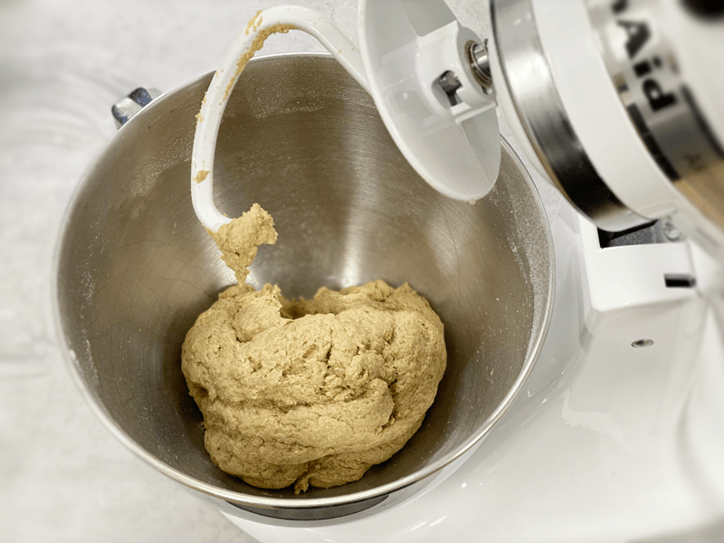
-
Knead the dough for 5 minutes. No less, no more.
-
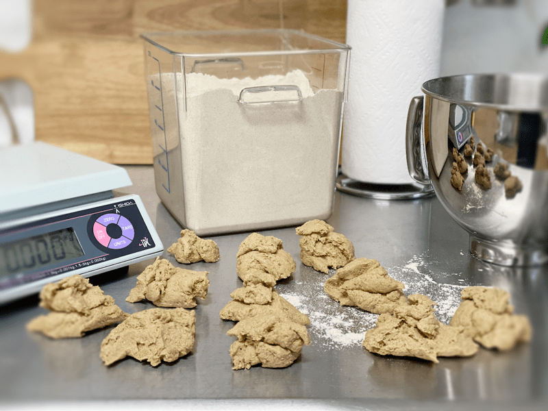
-
Weight out 80 g per pretzel.
-
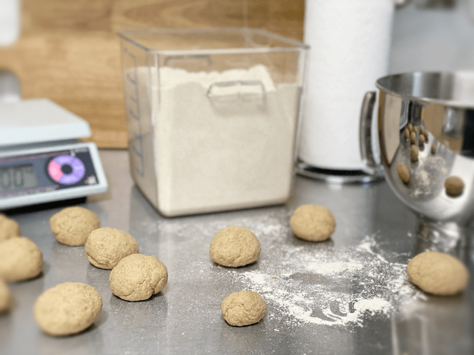
-
Knead and fold each dough ball in your hand, then roll into a ball.
-
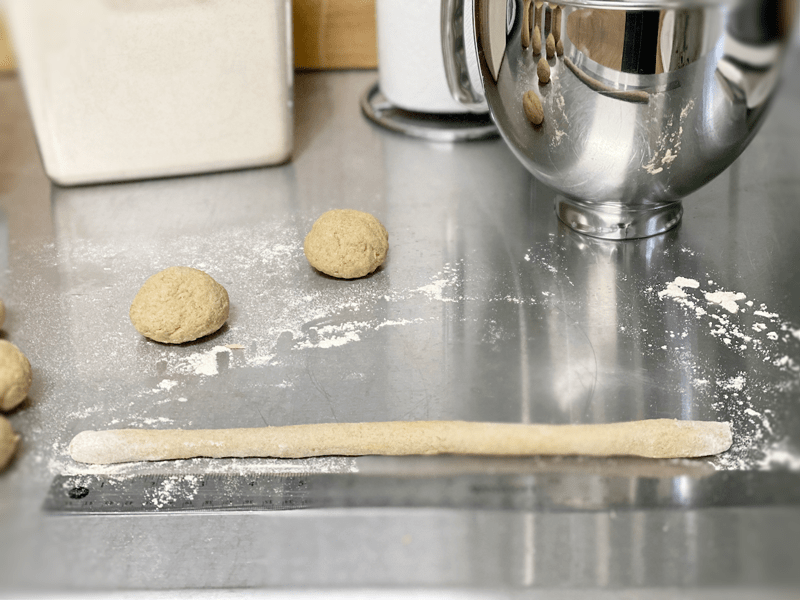
-
Roll the dough out to 16″
-
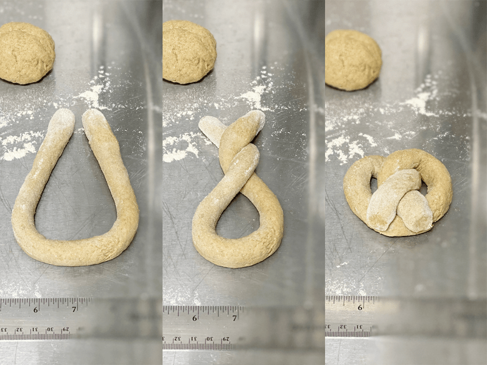
-
Loop, twist, and fold.
-
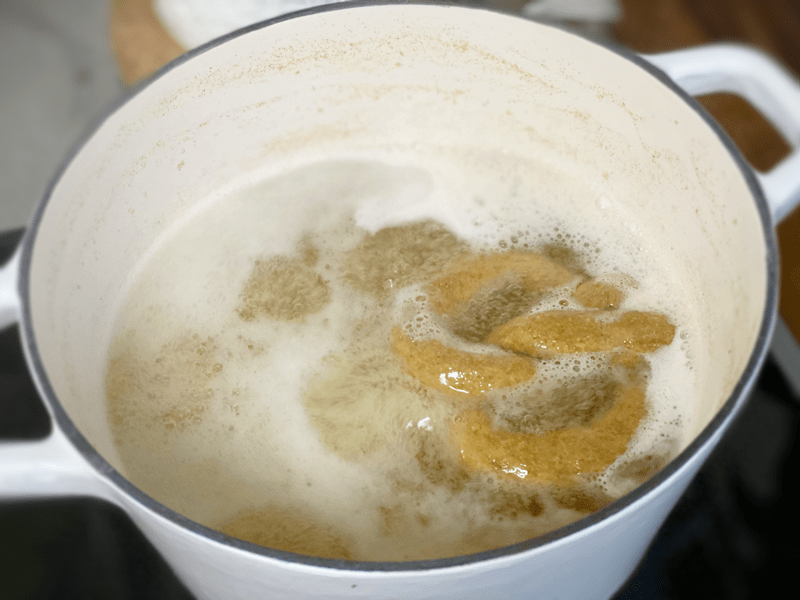
-
Boil each pretzel for 2 minutes.
-
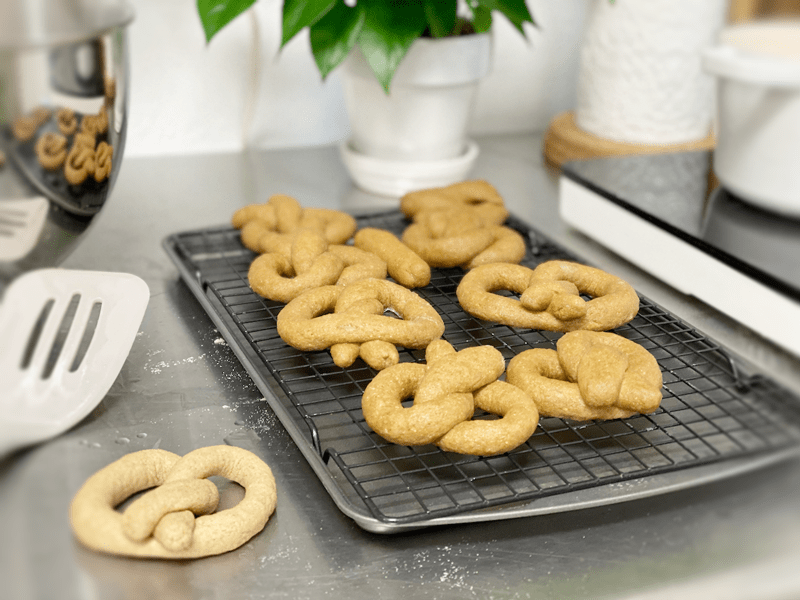
-
Place the boiled pretzels on a cool rack to drain any excess water. The pretzel to the left hasn’t been boiled.
-
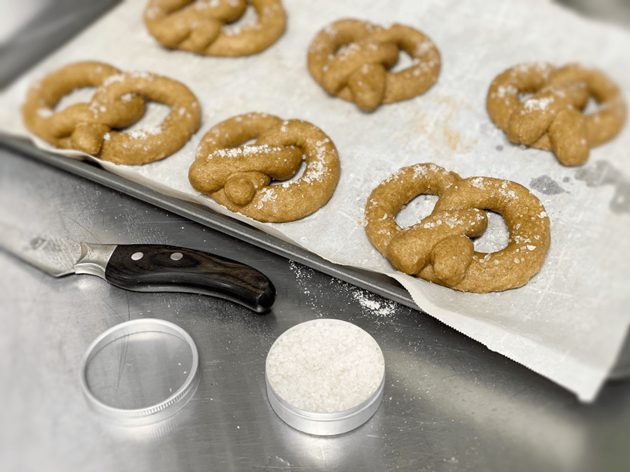
-
Follow the shape of the pretzel with the tip of a sharp knife to lightly pierce the skin. Salt and bake.
-
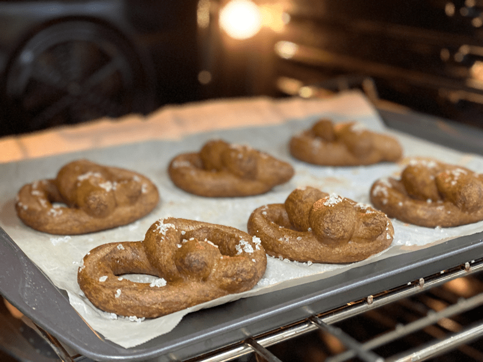
-
Done baking and piping hot!
-
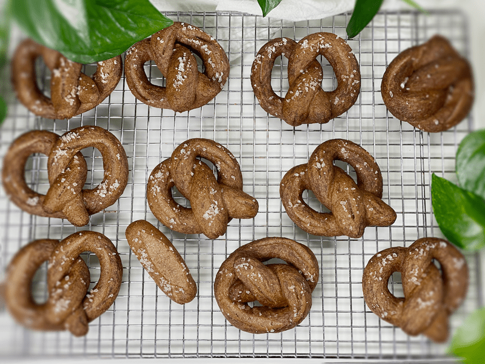
-
See the odd ball pretzel? That was left over dough. I refer to that as the Chef’s Reward for all the hard work. :) It’s a taste tester!
© AmieSue.com